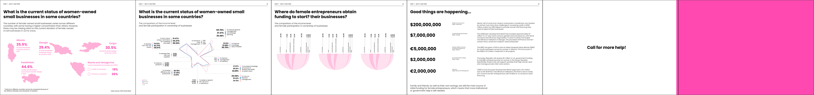

UN Women EXPO Project
This is a report on female entrepreneurs based on the EXPO2022 dataset.
EXPO provides an interactive space for women entrepreneurs, investors and private sector representatives for networking and collaboration, peer learning, ideas generation, capacity building and business development.
In this report, we focus on women-owned businesses in Central Asia, Western Balkans and Other countries.
The report is divided into three sections to show the current situation and challenges faced by women entrepreneurs, and what help they need from other participants.
Based on the Expo survey data, we enriched our report with desk research approach focusing on the impact of women entrepreneurs on economic growth.
The inspiration for the cover logo came from EXPO2022 questionnaire frequency dataset,
which highlighted the needs and support required by women entrepreneurs in three regions.
The butterfly-shaped logo features three overlapping colors that represent different region.
It symbolizes the struggle of women entrepreneurs today, like a butterflies about to take off but at the same time, they are facing significant challenges.
Version.1
Version.2
Final Version
Based on the Expo survey data, we enriched our report with desk research approach focusing on the impact of women entrepreneurs on economic growth.